6. Scripting¶
The Vortex OpenSplice Tester provides automatic testing capabilities by means of scripting. This section describes the features of Tester’s built-in scripting instructions, and how to install additional script engines.
6.1. The Script Language¶
The script language as used by the Tester is specifically designed to create readable and easily maintainable scripts.
Instructions are simple, with named parameters which enable the Tester to limit the testing to the fields applicable to the test. For example, the send instruction is an instruction which sends a topic. The basic syntax is the keyword send followed by the topicname and a list of named parameters between parentheses (‘round brackets’), terminated with a semicolon.
Illustrating send keyword syntax
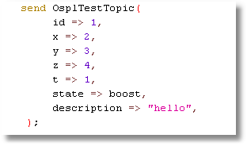{kind=link}
The check instruction is similar to the send instruction; it has options to find a specific instance using key fields or a query.
Illustrating check keyword syntax
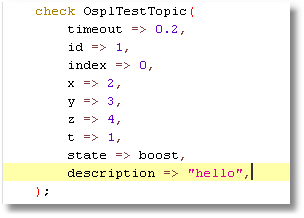{kind=link}
In this example a timeout is set, which will allow a wait of up to 0.2 seconds for the topic sample for the correct instance to arrive.
6.1.1. A script file¶
A scenario has the following format:
Illustrating scenario keyword syntax
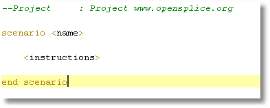{kind=link}
The name is for information only, and is not used further.
6.1.2. Variables¶
The script language allows the use of variables. Variables can be used to store values that can then be used at a later time. A variable is indicated by either a << or a >> prefix. Variables may be declared implicitly, or explicitly using the var instruction.
Example variable
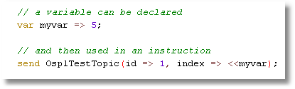{kind=link}
In this example the variable myvar is declared and initialized with the value 5. Within the send instruction the variable is used to provide the value for the field index. The << prefix indicates the direction of the assignment from the variable to the field.
Variable with >> prefix
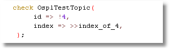{kind=link}
Here the variable index_of_4 is declared implicitly and the value of the field index is copied to the variable (the prefix >> points to the variable).
All environment variables and java virtual machine (JVM) properties are also available as variables, and they can be used as shown below:
Using environment variables
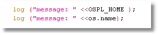{kind=link}
6.1.2.1. Special variables¶
There are some special variables which can be useful in scripts.
- curtime_sec and curtime_nsec provide the second and nanosecond parts of the current time.
- uniqid provides a unique number for every call, within the same session of the Tester.
- script_file and script_path provide the scenario file name and the scenario file’s path respectively. If the currently executing scenario context changes because of a call instruction to another scenario or macro file, using these variables in the called scenario or macro will reflect the respective path and file name of the called script.
Note that these special values are used without the << prefix.
6.1.3. Embedded Scripts¶
Inside a scenario any script compatible with the java ScriptEngineFactory can be used to provide calculated values for fields in a send, check or var instruction, or as a stand-alone statement.
Embedded javascript
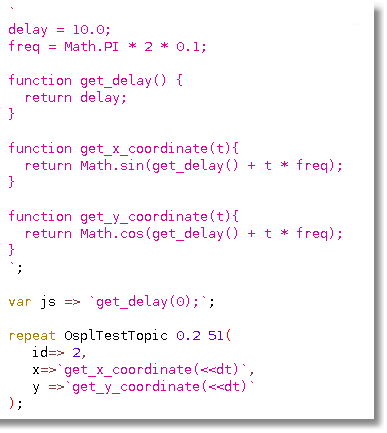{kind=link}
Stand-alone scripts must be enclosed by left single quotes, and then followed by a semi-colon.
Variables used in the javascript are translated before the evaluation of the script. In this specific case the <<dt is the delta time in the repeat function. All javascript in one scenario is executed in the same scope, and functions and variables declared at the beginning of a script are available later in the script.
A specific script language can be selected by providing the name of the script language in the first line of the embedded script: #!<language>, for example #!js. Note that the language description must not be followed by any other text. See section 5.6, Installing Script Engines, on page 85, for instructions on installing a scripting language for use with the OpenSplice Tester. If no language descriptor is provided on the first line of a script, the default language is used as set in Preferences.
More embedded javascript
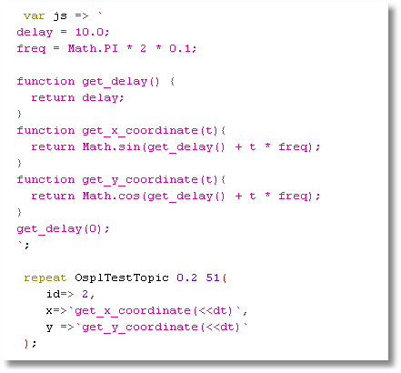{kind=link}
6.1.4. Comments¶
Comments can have the following formats:
Format of comments
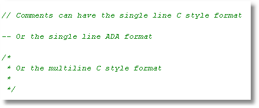{kind=link}
Within the scenario editor, comments are displayed in green.
6.1.5. Macros¶
For repeated scenarios a repetitive part can be split off into a separate script file called a macro. Macros can have parameters.
Calling a macro with parameters
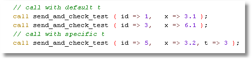{kind=link}
Similarly to send and check instructions, values for fields can be optional. However, in a macro a default value must be provided for a parameter to be optional.
Setting a default value for a macro parameter
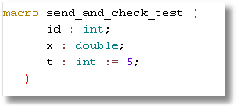{kind=link}
In this case t is optional, id and x are mandatory.
It is possible to call a scenario using the call instruction. Scenarios do not have parameters.
6.2. The Instructions¶
6.2.1. Send¶
Instruction to publish a sample of a topic.
send <readername> ( [fieldname => value,]*);
The send instruction may include an ‘update parameter’. The update parameter name is a combination of the topic name, followed by an underscore (_) and the literal text ‘update’. Valid values for the update parameter are true and false. The update parameter allows scenario scripts to send a series of samples that evolve, each from the previous one, without having to explicitly specify all field values in each send instruction.
If the update parameter is present, then the sample data sent is retained by the topic reader, associated with the topic key field value(s). A subsequent send instruction, including the update parameter set to true with the same topic key field value(s), will have its sample initialized from the retained values, if they exist. The sent sample with then replace the retained values.
A send instruction including the update parameter set to false with the same topic key field value(s) will be initialized from the topic defaults, but the sent sample will be retained.
A send instruction without the update parameter will be initialized from the topic defaults, and any retained value for the key field value(s) will be removed.
Disposing the topic reader will remove all retained values.
6.2.2. Dispose¶
Instruction to dispose an instance of a topic.
dispose <readername> ( [fieldname => value,]*);
6.2.3. Writedispose¶
Instruction to write dispose an instance of a topic.
writedispose <readername> ( [fieldname => value,]*);
6.2.4. Check¶
Instruction to check a sample of a topic.
check[_last | _any] | recheck_last <readername> ( [timeout => <timeout in seconds>,] [<fieldname> => [!]<value>[:deviation],]*);
A timeout value can be provided allowing the check to wait for <timeout in seconds> for the sample to arrive. If a sample meeting the criteria of the check is available either directly or within timeout seconds the fields as provided in the parameter list will be verified for correctness.
When the value of a field is an output variable:
>><varname>
Then the value will not be checked but entered in the variable with the name <varname>.
There are two special fields, topicReceived and topicDisposed, which when used will provide a true or false value into a variable.
When no sample is found which meets the criteria of the check then topicReceived will be set to false (and the check instruction will not fail); if a sample is received the value will be set to true. When a field topicDisposed is found, then the variable will be set to true if the sample was disposed and false if the sample was not disposed. In this case no fail is reported upon a check instruction when the checked sample was disposed.
The value can be given a possible deviation in the form <value>:<allowed deviation>. In this case when the value for the field in the received sample is within the range from value minus allowed_deviation to value plus allowed_deviation, the value is considered correct.
The sample which matches the check can be determined in several ways:
- The topic does not have a keyfield(s) or the topic has keyfield(s) but no value is provided for all keyfield(s). In this case the oldest not checked or marked sample is checked.
- The topic has keyfield(s) and the check provides a value for all keyfield(s). In this case the last sample with the key is checked, so long as it was not previously checked. If no matching sample (within the possible timeout) is found then the check fails.
- One or more fields of the check are marked as a query by prefixing the value with a ‘!’. The oldest not checked or marked sample which matches the query is checked. If no matching sample is found (within the possible timeout) the check fails.
- Instead of check, the command check_last is used. In this case (as for situations 1 and 3) the last not-previously-checked sample matching the criteria is checked.
- Instead of check, the command check_any is used. In this case also previously-checked or marked samples are considered.
- The command recheck_last will always check the last sample matching the criteria, regardless of whether it has previously been checked or not.
6.2.5. Miss¶
Instruction to check that no sample of a topic was received since the last checked or marked sample for the given key/query. The same rules apply as for the check instruction with respect to finding (or not) the matching topic sample.
miss <topicname> ([timeout => <timeout_in_seconds>,] [<fieldname> => [!]<value>[:<deviation>],]*);
6.2.6. Disposed¶
Instruction to check that an instance of a topic is disposed for the given key/query. The same rules apply as for the check instruction with respect to finding the disposed instance. Note that field values are only provided to find a specific instance (either by key or by query) and not verified for values as part of this instruction.
disposed <topicname> ([timeout => <timeout_in_seconds>,] [<fieldname> => [!]<value>,]*);
6.2.7. Mark¶
Mark all samples (with the given key/query) as read. Any regular miss/check function will not ‘see’ topic samples received before the mark instruction. If no key or query is provided all samples will be marked as read (and therefore not considered for check or check_last instructions). If a key value or query is provided, all samples matching the key/query will be marked as read.
mark <topicname> ( [fieldname => value,]*);
6.2.8. Repeat¶
Instruction to repeatedly send a topic for a specified count or until disposed.
repeat <topicname> <period> <count> ( [fieldname => value,]*);
If <count> is ‘0’ then the repeat will continue until the scenario terminates or until a dispose for the same topic and key. The variable dt is available for calculating a field value based on time since the repeat was started. The period indicates the period with which the topic will be sent. Note that a repeat command by itself does not extend the execution of a scenario and that when a scenario finishes (i.e. all following instructions are executed) the repeat instruction is terminated automatically. In such a case the wait or message instruction can be used to ensure that the repeat instruction is completed.
6.2.9. Set¶
The set instruction allows the call of a macro in a table-like fashion. The command allows a number of static parameters and variable parameters. The command has the following format:
set <macroname> ([<fieldname>=><value>]*)((<fieldname>*),[(<value>*),]*);
For example, the following set instruction:
set send_and_check_test (
t => 2)
(( x,id),
( 3.1, 1),
( 2.34, 2),
( 3.678, 3),
( 6.34, 4),
( 99.99, 5))
In this example the send_and_check_test macro is called five times, all five calls will be made with t = 2 and the values for x and id as indicated by each row of values. This can be very useful for testing of translations.
6.2.10. Execute¶
The execute instruction allows the execution of an application or command line script on the native OS.
execute [wait] [log] “<instruction>”;
If wait is set then the instruction will wait for the execute to complete. If log is set then the output of the execute will be logged to the Debug window (and resulting dump file). When log is used wait should also be used, to avoid overwriting log messages.
6.2.11. Log¶
The log instruction logs a message to the Debug window. Log messages can provide information immediately (e.g. a step being made in a script, or a value of some variable) or post-execution as part of the logfile which includes the full content of the Debug window.
log (“message” [optional var]);
6.2.12. Message¶
The message instruction opens a dialog with the message and allows the operator to provide feedback and a OK/NOK indication. The feedback plus OK/NOK indication are logged to the Debug window.
message (“message text” [optional var]);
This instruction is useful for semi-automatic testing of user interfaces where the GUI part is done manually using message instructions.
6.2.13. Fail¶
The fail instruction fails the execution of the scenario (final result). The execution terminates.
fail (“message” [optional var]);
The fail instruction can be useful in combination with an if instruction, for instance when a complex check is executed using javascript.
6.2.14. Call¶
The call instruction calls a macro or scenario. The name of the macro/scenario is the filename without extension. Macros must be on the macropath as provided in the configuration file. The Macrolist window displays all available macros. Also note that the macro name must be unique throughout all of the available macros because the path is not part of the selection of a macro (just the filename without extension).
call <macroname> ([<parametername> => <value>,]*);
6.2.15. Reader¶
The reader instruction allows the creation or deletion of a reader. When the keyword dispose is used the reader (if it exists for that topic) will be deleted. When a reader is created the topicname is mandatory.
reader [dispose] (<topicname> [, <qos> [,<partition> [,<readername>]]]);
The qos can be provided in short notation (2 or 4 characters):
< v | l | t | p >< b | r >[h][<S|E><D|S>
where
- < v | l | t | p >
- Volatile, local transient, transient or persistent
- < b | r >
- Best effort or reliable
- [h]
- History, for a “keep” of 10 which allows for the reception of 10 samples with the same key in one poll interval
- <S|E>
- Shared or exclusive ownership
- <D|S>
- Ordering based on Destination or Source time stamp
6.3. Instructions for Graphs¶
6.3.1. Graph¶
The graph instruction allows manipulation or save of the graph. It has the following parameters:
X
Y
Key
Color
Title
xUnits
yUnits
save => <name>
show => true|false
reset => true|false
Note that all graphs have the same X component; when omitted the X will be the sample time. If the Y parameter is set, then a new trace is created for the current graph. The X, key, color, title and units are used for this trace if provided.
If reset is true, then the graph is cleared (i.e. all existing traces are deleted) before creating any new trace. If show is true then the graph is made visible after adding the trace; when false, then the graph is hidden after adding the trace. When save is true the graph will be saved to an image file after the trace has been added.
6.3.2. Column¶
The column instruction allows the creation of an extra column from a script for use by the graph instruction.
column [clear] (<fieldname> [, <columnname>]);
When the optional clear is set then the column for the field with name fieldname will be removed. When columnname is omitted, the columnname will be the same as the fieldname.
6.4. Instructions for Flow Control¶
6.4.1. Wait¶
The wait instruction forces a wait in the execution of the script. The time is provided in seconds.
wait (<time in seconds>);
Value can be a variable.
6.4.2. If¶
The if instruction allows conditional execution of instructions.
If (val1 <operator> val2) then
<true instruction list>[else
<false instruction list>]endif;
Where <Operator> is one of ‘==’, ‘!=’, ‘>’, ‘<‘, ‘>=’, ‘<=’, ‘||’, ‘&&’.
Expressions can be layered with brackets:
((<<x>0) && (<<y>0))
6.4.3. For¶
The for instruction allows the execution of a list of instructions multiple times.
for ,<var> in 1 .. 10 loop
<instruction list which can use <<var>endloop;
or
for <var> in (a,b,c) loop
<instruction list which can use <<var>endloop;
6.5. Instructions for the Message Interface¶
6.5.1. Write¶
The write instruction writes a message to the interface.
write <interface>.<message> ([<fieldname> => <value>,]*);
6.5.2. Read¶
The read instruction checks a received message from the interface.
read <interface>.<message> ([<fieldname> => <value>,]*);
6.5.3. Connect¶
The connect instruction calls the connect of the interface. The functionality depends on the implementation in the interface.
connect <interface>;
6.5.4. Disconnect¶
The disconnect instruction calls the disconnect of the interface. The functionality depends on the implementation in the interface.
disconnect <interface>;
6.5.5. Control¶
The control instruction allows the execution of special instructions as provided by the interface.
control <interface>.<instruction>[ ([<fieldname> => <value>,]*)];
6.6. Installing Script Engines¶
In order to use additional script languages the appropriate script engines must be added to the Java classpath. The Java JRE already comes with a JavaScript engine by default (i.e. no specific installation is required). More Java script engines are available and can be used to support different scripting languages for the embedded scripts inside the scenario scripts, or for the additional fields.
When Tester starts, the available script engines will be logged (default log file is /tmp/OSPLTEST.log).
6.6.1. Jython¶
Download and install Jython on the target machine. Include jython.jar, which is normally located in the Jython installation directory, in the classpath of the OpenSplice Tester. Use this language by adding the following line as the first line of each script using the Jython script language:
#!jython
6.6.2. Jruby¶
Download and install Jruby on the target machine. Include jruby.jar, which is normally located in the lib directory in the Jruby installation, in the classpath of the OpenSplice Tester. Use this language by adding the following line as the first line of each script using the Jruby script language:
#!jruby
6.6.3. Groovy¶
Download and install Groovy on the target machine. Include groovy-all-<version>.jar, which is normally located in the embeddable directory in the Groovy installation, in the classpath of the OpenSplice Tester. Use this language by adding the following line as the first line of each script using the Groovy script language:
#!groovy